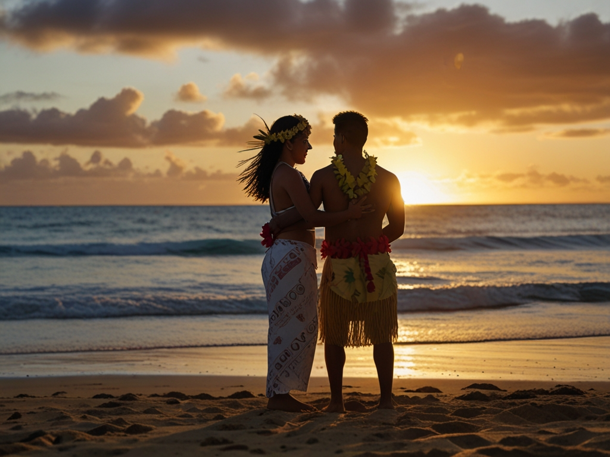
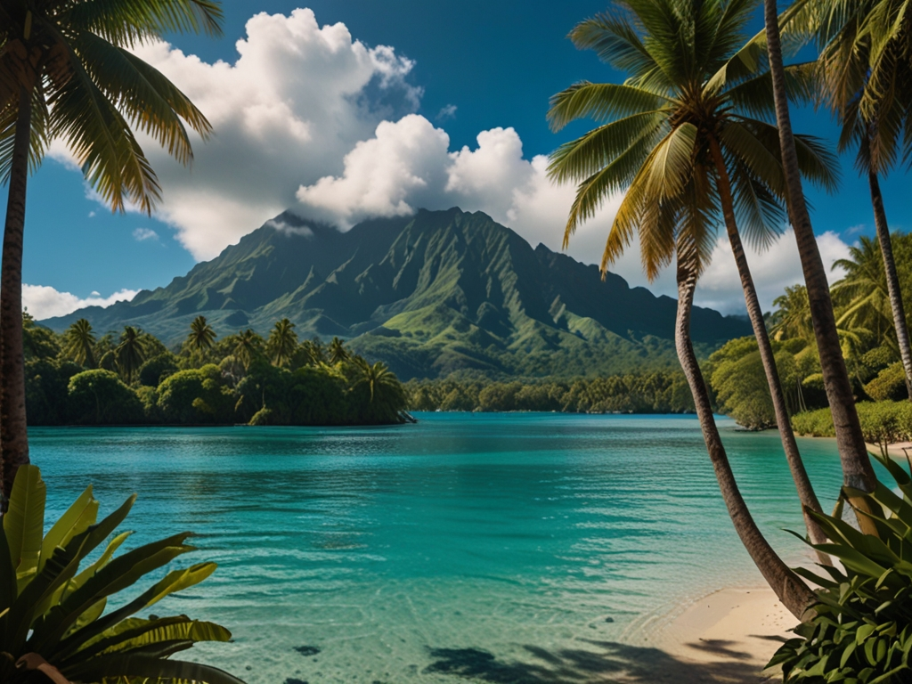
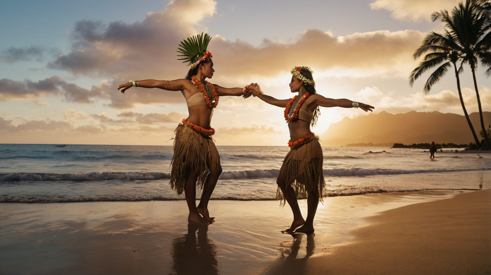

La Polinesia Francesa, situada en el corazón del Pacífico Sur, es un destino compuesto por 118 islas divididas en cinco archipiélagos: las Islas de la Sociedad, las Islas Marquesas, las Islas Australes, las Islas Gambier y las Islas Tuamotu. Este conjunto insular es conocido por sus aguas trasnparentes, playas de arena blanca y una exuberante vegetación tropical. Desde los icónicos bungalows sobre el agua de Bora Bora hasta los misteriosos sitios arqueológicos de las Marquesas, la Polinesia Francesa ofrece una combinación única de lujo, historia y naturaleza.
Las playas de la Polinesia Francesa destacan por su diversidad y belleza natural. Bora Bora, conocida como la "Perla del Pacífico", es un lugar icónico con su laguna turquesa rodeada por un arrecife de coral que brinda condiciones perfectas para el buceo y el esnórquel. Sumergirse en estas aguas permite observar una colorida fauna marina, desde peces tropicales hasta tiburones de punta negra y mantarrayas.
Las montañas de origen volcánico en Tahití y Moorea se alzan como impotentes monumentos naturales, cubiertas de una vegetación densa que incluye palmeras, helechos gigantes y orquideas. Las cascadas ocultas y los senderos de trekking ofrecen una experiencia de aventura única, permitiendo a los visitantes explorar la naturaleza salvaje de estas islas. En el valle de Papenoo en Tahití, por ejemplo, los excursionistas pueden disfrutar de vistas panorámicas y refrescarse en cascadas de agua cristalina.
La cultura polinesia es una de las más antiguas del Pacífico y ha mantenido sus tradiciones vivas a lo largo de los siglos. Uno de los aspectos más destacados de esta cultura es el 'Ori Tahití' la danza tradicional que simboliza la conexión de los polinesios con la naturaleza y sus dioses. Los movimientos fluidos y expresivos de esta danza cuentan historias antiguas y celebran la vida y la fertilidad de las islas.
Otro elemento cultural importante es el tatuaje, que tiene una fuerte carga simbólica en la Polinesia Francesa. Cada tatuaje es único y se adapta a la historia personal del portador. Los patrones geométricos y los símbolos de la naturaleza son comunes en los diseños, refrejando la conexión profunda con el entorno natural. Además, el festival anual Heiva i Tahití reúne a comunidades de todo el archipiélago para competir en danzas, deportes y artesanía, en un espectáculo que celebra la cultura viva y vibrante de estas islas.
